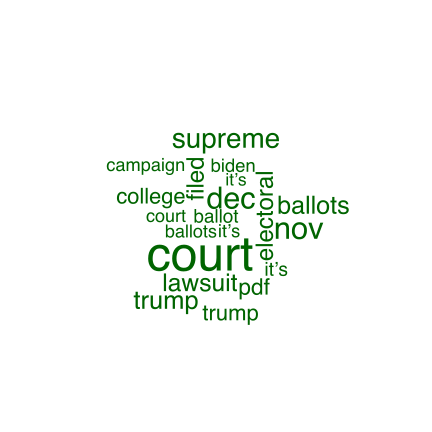

The Making of a Transnational Political Cult - An Affection Analysis of “A Little Newspaper That Could”
Thuy Nguyen
University of Oregon
Object of study
Object:
The Epoch Times newspaper, English and Vietnamese editions. A newspaper that made an unexpected rise from a “near irrelevant” to a notable one that could generate a loyal readership in the US and Vietnam.
Why does it matter?
An analysis of a variant in the making of a trans-national political cult – a phenomenon that has been overlooked in the literature.
Introduction
This paper aims to analyse sentiments in political articles. It explores the prevalance of eight basic emotions in the Plutchik “emotion wheel”: fear, anger, trust, sadness, disgust, anticipation, joy, and surprise. For example, political cult is believed to be generally paved by fear and anger. Later analyses will test this hypothesis.

Research questions
How did a minor newspaper like the Epoch Times become a popular one by generating a trans-national political cult of Trump?
What was the image of Trump that the Epoch Times created? What kind of specific traits did the news articles associate Trump with? Are these traits comparable to those that the extant literature on political cult has pointed out?
How did the Epoch Times weaponize affective news? How were the emotional flows infused in their articles? How did the readers respond to these articles in the comment sections?
Methods
Comparative sentiment analysis of text data.
Using NRC lexicon dictionary to capture different shades of emotion
Applying Lexicoder Sentiment Dictionary, a “broad lexicon scored for positive and negative tone and tailored primarily to political texts”
Contribution goal
An analysis of a new variant of political cult – a construction of leader cult that goes across national boundaries by a non-state actor.
An illustration of the co-production of media affection between media producers and audience
Preliminary analysis (1)
Comparision of overall sentiment in the articles published in the Election day, November 3, and the day the election result was called by the media, November 7. Negative affection is more intense in the latter.

(2)
In a sample set of articles published between 2020-10-15 and 2020-11-24, the most used words includes “court”, “supreme”,“lawsuit”.

Data
The whole dataset contains all articles in the politics section produced by the Epoch Times English since March 5, 2021. Below is a sample set of articles published between 2020-10-15 and 2020-11-24.

Acknowledgements
The dataset was collected in Winter 2021 as a part of the Capstone project, Data Science Specialization, University of Oregon.
I am indebted to Dr. Daniel Anderson for his guidance and support.